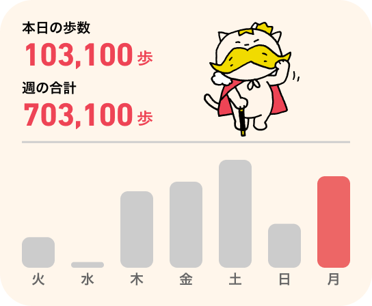
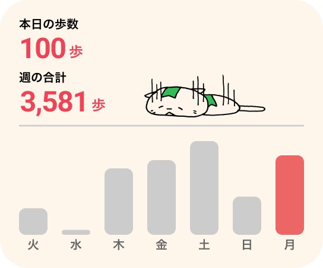
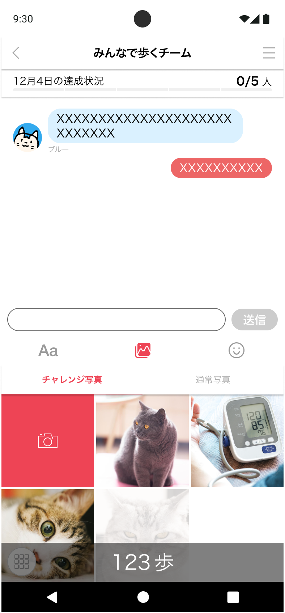
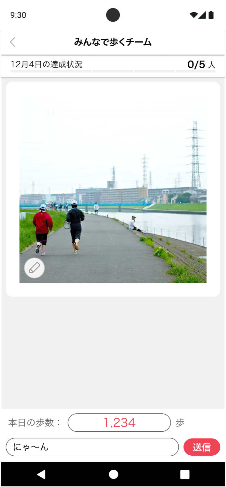
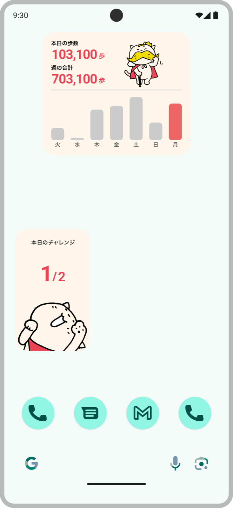
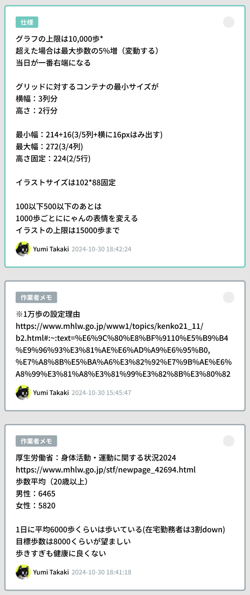
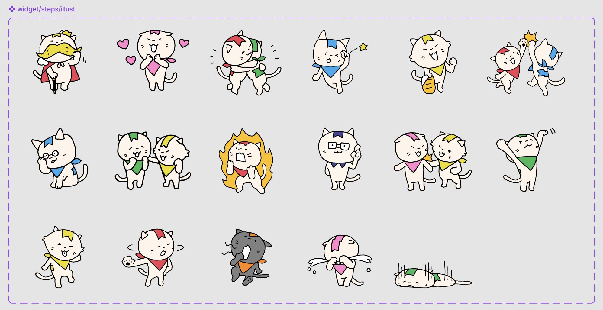

歩数計ウィジェット
A10lab 2024.10 1日 UIUX Design
a10labプロダクト事業部では1ヶ月に1日「改善デー」という日が設けられている。リファクタリングのようなやらなければいけないけれど優先度が低く手が付けられてないものや、事業貢献に繋がるやりたいことをやっていい日である。ユーザーの声で多くあったのが「歩数がチャレンジ投稿画面までいかないとわからず導線が長い」という不満である。個人的に解決したいと考えていたので取り組むことにした。


歩数を確認するにはチームに入って、チャレンジ送信画面まで行かなければならない。
背景と課題
「歩く」は人気カテゴリーの1つで、5人で2万歩を歩くウォーキングリレーというチームも用意されている。前述した通り実際の歩数を確認するには、アプリを立ち上げ→チームに入り→チャレンジ投稿画面までいかないと確認できない(上図左の画面)。ここでの歩数はGoogle fitと連携した数値を表示しているが、みんチャレ内にとり込まれるタイミングはラグがあり実際とズレることが多くそれも問い合わせが多い不満の一つである。Google側が提供しているものに対しては対策がとれないので、それが気にならないようにできるものを考えことにした。
制約
iOSエンジニアが足りていないのでAndroidのみ作成。実装もエンジニアの気が向いた時に行うのでいつ完成するか不明。


解決策
歩く歩数に応じてイラストが変化するウィジェットを作ることにした。たくさん歩くことでポジティブなイラストに変化し、よりやる気が出る体験を提供。習慣化は心理ハードルが低い方がよく、毎日歩くよりは歩けない日があってもいいと思えるように週の合計も表示し毎日の変化がわかるようにした。タップするとアプリが立ち上がるのでエンゲージメント向上にもつながると考えた。

成果と振り返り
- エンジニアにも好評で、ステージング環境で使用してみたところ可愛くて愛社精神も高まった。
- その他のリリースで忙しく、バグ修正ができていないため本番リリースはされていない。
- 社内で一番要望の強かった自治体部からは「高齢者にウィジェットの概念を説明するのが難しい」と次の課題をもらった。